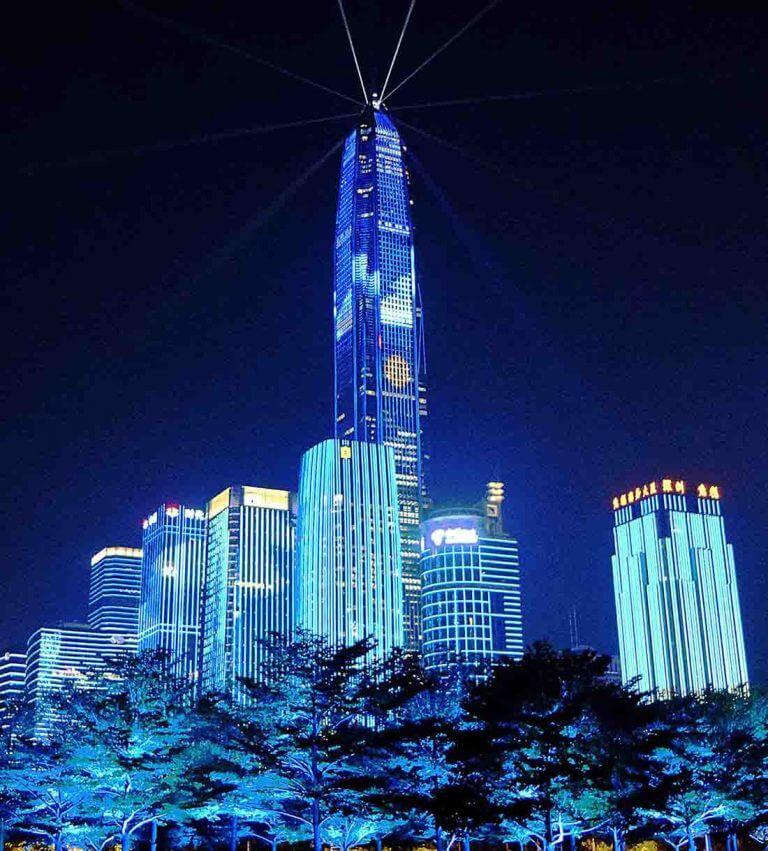

LIGHT POLLUTION

People all over the world are living under the nighttime glow of artificial light, and it is causing big problems for humans, wildlife, and the environment. There is a global movement to reduce light pollution, and everyone can help.
Most environmental pollution on Earth comes from humans and their inventions. Take, for example, the automobile or that miraculous human-made material, plastic. Today, automobile emissions are a major source of air pollution contributing to climate change, and plastics fill our ocean, creating a significant health hazard to marine animals.
Causes of Light Pollution:
1.Light trespass: When an unwanted light passes over your space from outside, it is called Light trespass.
2.Over Illumination: When we use excessive amounts of light energy, it is called over Over Illumination.
3.Glare: When we look at the filaments of an unshielded or poorly shielded light source, it Glare.
4.Clutter: Excessive grouping of lights creates confusion and Clutter